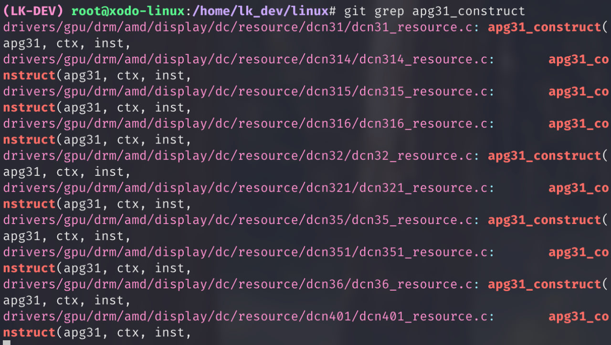
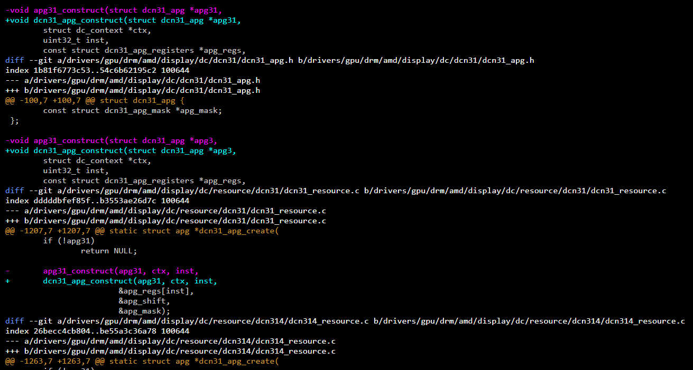

Minha primeira contribuição para a disciplina foi a edição do nome de funções dentro do diretório de drivers do subsistema DRM do Kernel, para melhorar o funcionamento do Function Tracer (ftrace) do Kernel. Numa das aulas obtive a sugestão da contribuição pelo pad da disciplina, e então passei a estudar com minha dupla para encontrar algum código que pudesse ser otimizado.
O melhor funcionamento do ftrace depende do match entre os nomes dos arquivos .c do Kernel e dos prefixos das funções dentro desses arquivos. A partir da sugestão e buscando na DRM, encontramos alguns diretório dentro de 'drm/amd/display/dc' que continham funções cujos prefixos não davam match com o nome dos arquivos.
Parte do diff do patch:
No final, a contribuição infelizmente foi recusada. O mantenedor Alex Hung rejeitou o patch e esclareceu que alguns testes dentro do Kernel dependem dos nomes originais das funções.